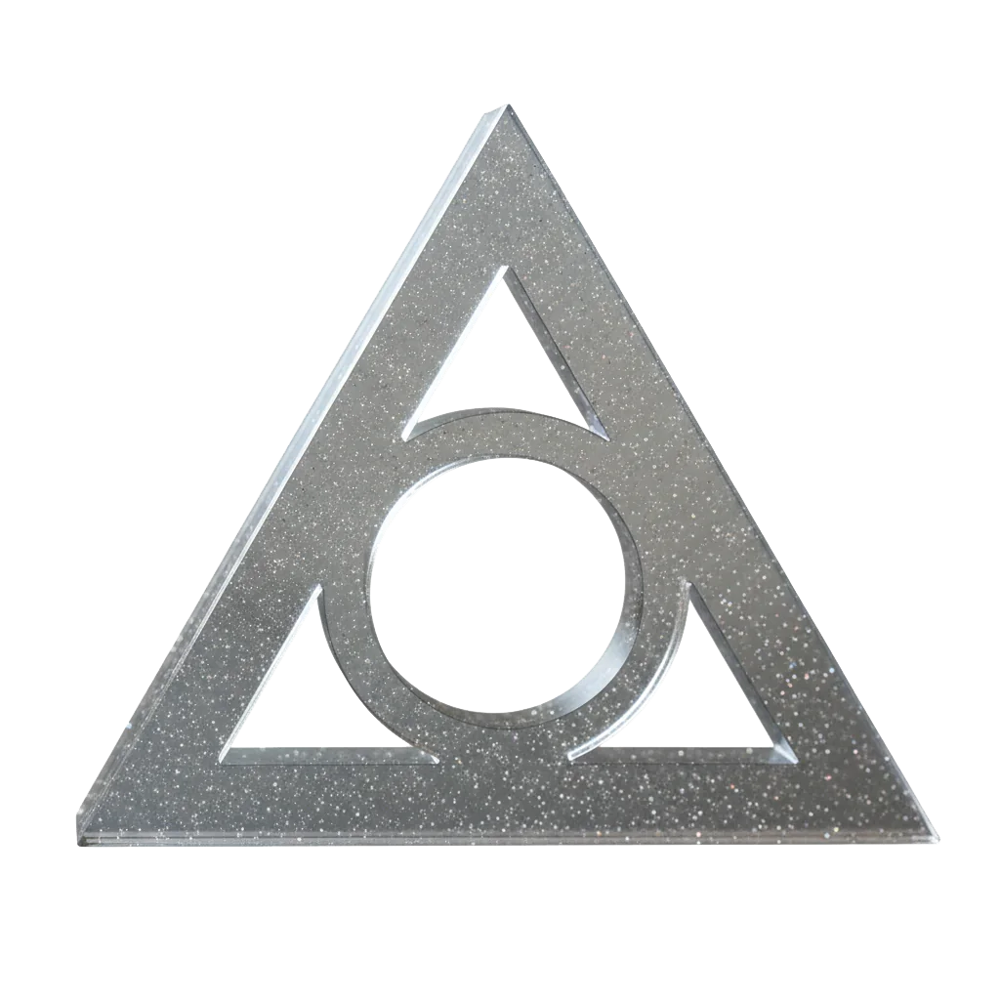

The Conclave is a powerful part of the city, training users of mana.
It is a rigid hierarchy with entry to the guild being one of not only aptitude, but also influence and wealth. Getting ahead in the Conclave requires you to research mana use and application, you get residuals for your research. Stiff fees for mana and materials make a profession in the guild one of constant search for income and reward. Upon death, all research reverts to the Conclave, ensuring a ever growing body of knowledge and power.
Why Freeport
Every material fact about the Conclave points at Nysis. The ore is at Ravenna. The extraction monopoly is a grant of the Nyssian chevayo. The lease payment the order makes for that ground is divided among five urbestroy and is the whole of what holds their confederation together. And the Conclave is not in Nysis, has never been in Nysis, and has turned down ground there twice.
The order’s own account of this is two words. Magic first.
Nysis would grade it. The Pura Ecclesia is strongest on that coast and its Puritan ladder is the ordinary social order of Nyssian life: an inquisitor at every cradle, Pure through Feral, and a Touched child taken from parents it does not match. The Conclave grades on two things and neither one is birth. Can you do the work, and can you pay the fees. That is indifference rather than charity, and the order has never pretended otherwise: the fees are stiff at every rank and a poor Pure gets no further than a poor Third. But an order house at Collima would be asked for a list of its Acolytes by grade, and it would be asked by people who could enforce the asking, and the answer has been the same for two hundred years.
Buralia will not have it. The Emperor is a Wildens prophet and a Talker to those above, and in the heartland he is the religious authority in his own person. An order of mana on that ground is not a supplier, it is a second power with its own hierarchy and its own recruits, and the empire has declined it politely and on a schedule for as long as anyone has asked. The refusal at Spero is a matter of sovereignty and is the one piece of imperial frontier policy that is public record. Buralia is the only country in the region where the order’s product is refused rather than priced.
Freeport gives it a chair. Three men rule the city: the lord of merchants, the chief priest of the Pura Ecclesia, and the archmage of the Conclave. Not a licence, not a patron, not a concession revocable by somebody’s council. A seat, one of three, in a city with no doctrine to protect and no dynasty to inherit, which needed a third leg and did not much care what it stood on.
The chair on the archmage’s left belongs to the chief priest of the church the order left Nysis to get out from under, and that church is the Conclave’s largest customer by a wide margin. Beside is not beneath. The order understands exactly what the distinction is worth and has never once tested it.
What the Seat Is Worth
Influence here is not a figure of speech and it does not run through governing anybody.
The order lays a mana signature on every coin the Mint strikes and sells the readers that check it (see Currency and Prices). Freeport’s money is the only currency three mutually intolerable countries will all take, and it is trusted because the Conclave signs it. Nobody had to vote for that. The order is inside every transaction in the region and owns none of them.
It pays five Nyssian urbestroy their private incomes every year, on time, for ground it leases. A country’s entire constitution runs on a payment the order writes.
And it defends nothing. The Watch keeps the walls, the Grand Office keeps the books, and the archmage keeps neither, which is the arrangement the order came here for.
What the seat does not buy is safety. The triumvirate carries by two, and the other two chairs have carried against the Conclave before. The largest customer for refined mana has spent a decade arranging not to need it, four hundred miles east behind a mission wall, and nobody at that table is obliged to mention it. And there is a fourth man who is not named aloud and sits at no table at all.
Types of Magic Users
- Gray Artificer – construction, objects, armor, and infrastructure.
- Verdant Keeper – agriculture, forestry, and ecological management, animal connection.
- Azure Mendicant – specialists in medicine, surgery, augmentation, and detox.
- Crimson Battlemage – combat projection and battlefield control.
- Amber Vizion - specialists in perception‑warping, interrogation, counter‑intelligence, and social engineering.
- Luminous Warden - specialists who inscribe wards on people, places, and objects; often protect key infrastructure, vaults, and ritual circles.
- Manite Alchemist - doesn’t cast in the traditional sense; instead refines, stabilizes, and recombines manite types into potions, charges, and grenades.
Symbol
The Conclave’s symbol (a circle inscribed within an equilateral triangle) represents the mage held in balance by three binding virtues. The circle is the individual practitioner, every student and master alike, equidistant from each side of the triangle. A “true” Conclave mage is one whose life and work are contained within, and defined by, the guild’s three demands: Knowledge, Service, and Dedication.
Each side of the triangle bears one of these words. Knowledge is the relentless pursuit of mana theory, experimentation, and research, with every breakthrough ultimately reverting to the Conclave’s archives. Service is the application of that knowledge for the city and the guild (healing, defending, warding, building, feeding) rather than hoarding power for oneself. Dedication is the disciplined, lifelong commitment to this path: the willingness to endure years of study, risk, and self-correction in order to refine both craft and character. Instructors sometimes summarize it as: “Knowledge without Service is vanity; Service without Dedication falters; Dedication without Knowledge is blind.”
Mana Production and Refinement
The Conclave has a vigorous mana production network and maintains a lock on mana refinement, distribution, and sales. Their primary buyer is the Pura Ecclesia, the church in Freeport.
Ranks
Although most mages choose one primary mana color, at Maester level and above, they can choose rituals of secondary and tertiary colors.
Neophyte or Initiate
Rituals: Cantrips (2)
A hopeful outsider at the threshold of the Conclave. Neophytes have been granted provisional entry to the grounds but not to the ranks; they spend a single intensive year in foundational training. They study basic mana theory and manipulation drills, Conclave history and law, and undergo rigorous exercises to hone mental focus, memory, and stamina. Throughout the year, their mana affinity is repeatedly tested under stress and in controlled group work. At the end of this period, each Neophyte sits an extensive written examination and submits an entrance essay explaining their intended path and motives, which they must then defend orally before a small panel. Only about one in ten passes. Those who fail are either expelled from the grounds or, if fortunate and suitably talented, offered low-ranking administrative or custodial positions where their rudimentary mana literacy can still serve the Conclave. If accepted, the Neophyte is promoted to Acolyte through a ceremony called “Taking on the Amber Veil”.
Acolyte
Rituals: Cantrips (4) and Arcane Inspection L1, 1-2 primary color specific rituals at L1
A formally accepted student of the Conclave, bound to a path but not yet trusted with its full powers. Acolytes move beyond drills into structured study of mana preparation, controlled deployment, and the ethics of Conclave practice. Early in their tenure, they declare an affinity track (Gray Artificer, Verdant Keeper, Azure Mendicant, Crimson Battlemage, Amber Vizion, Luminous Warden, or related specializations) and are taken under the supervision of a sponsoring Maester. Their days are divided between advanced coursework, supervised experiments, and assigned community service: tending wards, assisting in infirmaries, supporting agricultural projects, or acting as junior aides on expeditions. Each Acolyte is required to complete a focused research project in their chosen field, culminating in a written thesis and an oral defense before their Maester and a small panel. Roughly one in four succeeds on the first attempt; others may continue studies and try again in a subsequent year, or seek work in administrative and logistical posts where their partial training still has value.
Adept
Rituals: Cantrips (6), Arcane inspection L2, and 2-3 primary color specific rituals at L1 or L2
A full mage who has completed advanced studies in mana production and application under the supervision of a Maester aligned with their primary mana affinity (e.g., Gray Artificer, Azure Mendicant). Adepts have demonstrated reliable field competence and the ability to apply theory outside the classroom: coordinated casting, safe use of mixed mana types, and basic independent research. They must complete a supervised practicum (often a season of work for the Pura Ecclesia, the city guard, or Conclave-sponsored expeditions) where their decisions carry real consequences. At the end of this period, they submit a portfolio of field reports and a refined research brief. The pass rate is roughly 60%; failures may repeat their practicum once or accept permanent junior roles as staff mages, lab technicians, or expedition support casters.
Maester
Rituals: Cantrips (8) and 3-4 primary color specific rituals at L2 or L3, 1-2 secondary color specific rituals at L1
A senior mage-researcher recognized as an authority in a specific color or discipline (e.g., Maester of Gray Infrastructure, Maester of Azure Augmentation, Maester of Crimson Projection). Maesters sponsor Acolytes and Graduates, secure funding and mana allotments from the Conclave, and lead major projects in their field. Promotion to Maester requires a substantial body of original work: multiple published treatises, a demonstrated line of innovations or refinements in mana technique, and at least one major project that has benefitted the Conclave or the city (a new warding schema, an agricultural breakthrough, a battlefield doctrine, etc.). Candidates undergo a formal “Colloquium of Peers,” where existing Maesters publicly interrogate their methods, results, and ethical choices. Only about 15–20% of Graduates ever achieve this rank; most remain as career Graduates under a Maester’s direction.
Arcanist
Rituals: Cantrips (all), all primary color rituals at L3, 2-3 secondary color specific rituals at L2 or higher, 1 tertiary color specific ritual at L1
The highest scholarly and theoretical rank within the Conclave, reserved for those whose work reshapes understanding of mana itself rather than merely improving practice. Arcanists develop new frameworks, classifications, or cross-color systems: ideas that change how Maesters and students think about mana, the body, and the world. Their writings become required texts; their sigils and methods are quietly adopted across multiple disciplines. To be named a Arcanist, a Maester must present a “Grand Thesis” spanning years of work, defending it before a special convocation of Arcanists and senior Maesters. The process is as political as it is intellectual; opposition can delay recognition for decades. Fewer still than one in fifty Maesters ever receive the title. Arcanists rarely teach basic courses; instead, they advise the Conclave Council, arbitrate dangerous research, and leave behind codices that revert entirely to the Conclave upon their death, cementing the guild’s control over knowledge.
Neophyte Initiation
The Initiation Rite of Taking on the Amber Veil always takes place below the Conclave, in chambers most citizens never see. Old stone meets new Gray here: the walls are lined with programmable matter that shifts slowly in abstract patterns, a reminder that once you step inside, you are entering a living system, not just a school. Initiates fast and meditate for a day beforehand, rehearsing focus exercises until the boundary between breath, heartbeat, and imagined mana flow begins to blur.
The rite begins in the Hall of Witnesses, a circular room ringed with recesses that hold dormant manite sculptures: constructs left by past masters as a record of their art. An Arcanist or senior Maester questions the initiates one by one, probing memory, motive, and discipline: “Why do you seek the seed?” “Whom will you serve when your will and your work come into conflict?” Only when the council is satisfied that the initiate understands both the power and the cost are they led onward, deeper into the Amber vaults.
The binding itself happens in a small, dim chamber dominated by a single reclining chair grown from Gray and padded with Azure‑soaked biomesh to protect the body during the procedure. A filigree of Amber relays descends around the initiate’s head like a veil, each contact point cold at first, then tingling as the manite snakes along blood vessels and nerves toward the brain. The apprentice must hold a precise visualization (an internal sigil of loops and crossings) while the masters chant code‑phrases; this focuses the Amber layer into a stable lattice instead of a chaotic scattering of particles.
For a few terrifying moments, perception fractures. Sounds smear into color, the taste of metal sits at the back of the tongue, and the sense of the body’s outline stretches as the new Amber scaffold maps itself onto the initiate’s sensory cortex. Then, as Luminous wards lock the pattern in place, reality snaps back into focus, sharper than before. Many describe it as suddenly noticing a faint second heartbeat just beyond their own, a rhythm that is not blood but potential; with practice, that new “beat” becomes the feel of nearby mana, the way a mage senses when a seed is ripe to shape or cast.
At the end of the procedure, the filigree veil has integrated directly into the body of the initiate, thus the name “Taking on the Amber Veil” for the name of the ceremony.
A final test follows. A simple, inert Gray bead is placed in the initiate’s palm. Under the guidance of their sponsor, they must infuse it with a trace of Crimson and wrap it in a Luminous shell, shaping their first true mana seed by thought, gesture, and word alone. If the bead holds its form and responds to a murmured trigger (a brief flare of light, a puff of harmless warmth) the council recognizes the new bond. Oaths are sworn, names are inscribed in a Conclave ledger, and from that day on, the initiate carries Amber in their skull and debt in their soul.
The process is still fraught with potential failure. Some initiates, despite significant testing, cannot interface with the veil and are rejected by the Conclave as magically stunted. It is rumoured that some initiates are damaged mentally during the ceremony, having their personalities subverted and end up as functional zombies or even psychotic.
Greetings
Where the Brotherhood runs on secrecy and loyalty, the Conclave embodies hierarchy and ceremony. There are few casual exchanges except among peers. Greetings are important and keep in mind the rank of the two involved, with those of lesser rank initiating the greeting.
The greeting starts with a bow commensurate with the difference in rank. A deep bow to a superior, a nod to a peer, and a quick glance down to those beneath you. The inferior bow is accompanied by a touch of the right finger tips touching the temple acknowledging the dedication of minds to the Conclave.
A junior to a senior will say “Your work precedes you” noting the contribution of the senior to the Conclave, and the senior will reply “The Conclave remembers.”
For peers, the greeter will say “Peer in study.” with the response “Peer in struggle.”
When entering a classroom or lab: students stop at the threshold and murmur, “Knowingly we err,” and when the classroom starts, the teacher will reply, “So that others need not.”
Before starting a collaborative exercise: everyone touches the table/bench and says, “All findings return,” echoing the rule that research reverts to the Conclave on death.
Short motto-like phrases
You can sprinkle these in as reflexive lines students say under their breath or to each other. • “The Conclave above all.” • “For guild, not glory.” • “Let mana bear witness.” • “Theory before impulse.” • “Proof, then power.”
Headgear and Rank
Headgear in the Conclave is a sign of rank.
- Neophyte: no shape (no hat, no formed knowledge).
- Initiate: circle beret (entering the circle of mages).
- Adept: square cap (knowledge given structure and stability; they’re builders of the Conclave’s work).
- Maester: tricorn (triangle + circle, directing and completing the lower ranks).
- Arcanist: no headgear again, signifying they’ve gone beyond fixed forms and know their understanding is incomplete.